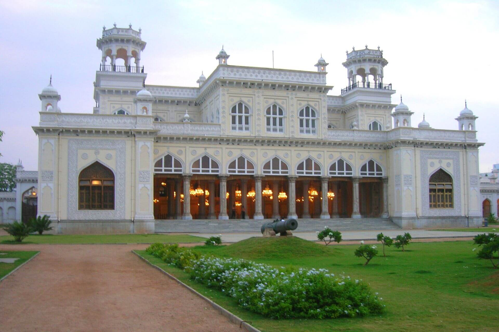
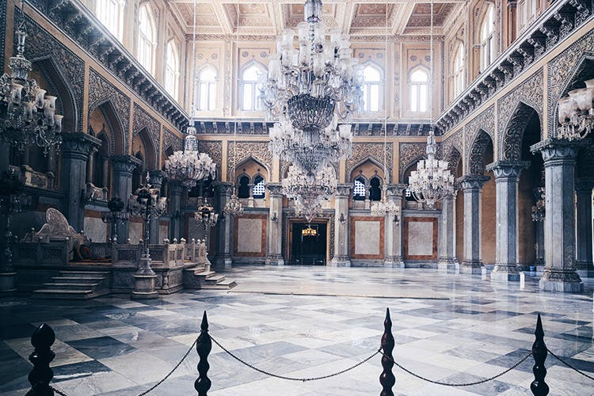
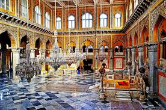
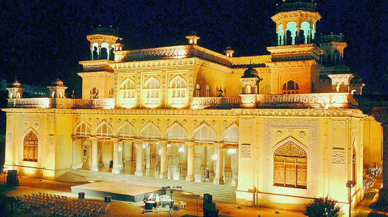

|  |  |  |  |
|---|
The history of Hyderabad is so enticing that it feels like reading a wonderful love story and its glorious past is no less than a fairy tale. And the most interesting part of this novel forms the rule of the Nizams, which fills pages of history with legendary contributions of art, architecture and science.
A testimony to this aspect is seen in the form of the many exquisite monuments scattered all over the city. One such monument that in its striking sumptuousness still shows off the power of time immemorial is the engrossing Chowmahalla Palace. The name Chowmahalla refers to four palaces. The construction of the palace was initiated in the year 1750 by Nizam Salabhat Jung but it was Nizam Afzar-ud-Dawla Bahadur who saw that the palace was completed between the years 1857 and 1869. Originally, the palace covered 45 acres from Laad Bazaar on the north to Aspan Chowk Road which is on the south. The Chowmohalla complex is a replica of Shah’s Palace in Teheran, Iran. Presently the palace consists of two courtyards with graceful palaces, the grand Durbar Hall or the Khilwat. Gardens and fountains add to the elegance.
Southern Courtyard is the oldest part of the complex. It comprises of four graceful palaces Tahniyat Mahal, Mahtab Mahal, Afzal Mahal, and Aftab Mahal. Northern Courtyard has been restored and is open to the public. The main attraction of this area is the Bara Imam, which is a long corridor. It has rooms on the east wing, which once served as the administrative wing. Another stunning construction is the Clock Tower. It houses the Khilwat Clock which still works perfectly.
Chowmahalla Palace is located at a distance of 2 km from Charminar in old city and is easily accessible by road from various parts of Hyderabad.
All days of the week except Friday : 10:00 AM - 5:00 PM
Telangana Tourism operates Plaza Hotel in Begumpet,Located at distance of 12kms from Chowmahalla Palace is a comfortable stay. The Plaza hotel here is ideal for tourists visiting destinations in and around Hyderabad. There are standard and deluxe A/C rooms and the interiors are world-class, designed aesthetically to attract tourists. The rooms of the hotel are well-maintained, the environs look pleasing and this hotel is built in signature style in the midst of the city. There is also an attached restaurant here offering quality food for the visitors at specified timings. A prominent hotel of Telangana tourism, Plaza Hotel has well-laid tiles while the woodwork of suites indicate world-class construction, thereby creating a landmark hotel of the tourism department.
Haritha Taramathi baradari resort is located at a distance of 12.4kms from Chowmahalla Palace ,is an attractive destination in Hyderabad. The resort has an Open Air Auditorium, which is ideal for corporate gatherings and private events. It also has an Air Cooled Theatre and Banquet Hall that are a perfect fit for special events, conferences and exhibitions. It comes with an attached pantry, a multi – cuisine A/C restaurant and a 50 PAX A/c Bar(saqi) for spending some quality time.The resort also has a souvenir shop and swimming pool that comes with a modern health club with best facilities for fitness and leisure. There are A/C suites and A/C rooms that can be an ideal way to enjoy luxury in the vicinity of a prominent monument. Spending time close to a heritage destination with best accommodation and quality food, with all trappings of a resort has never been this wonderful!